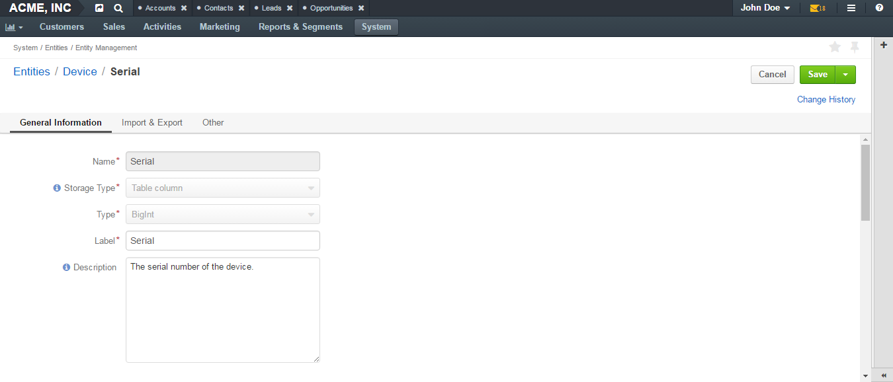
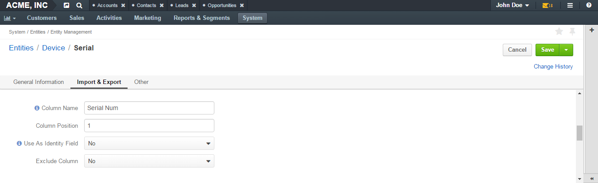
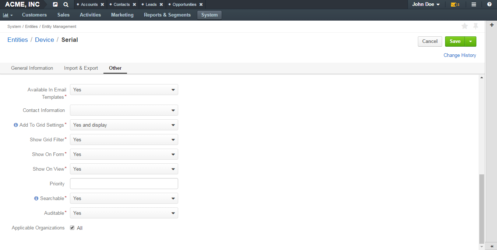

Entity Field Properties¶
The creation of an entity field takes two steps. In step 1, you specify just the very basic properties: name, field type and field storage type. In step 2, you specify more advanced properties, some of which can be field-type-related.
Basic Entity Field Properties¶
General Information Section¶

| Field | Description |
|---|---|
| Field Name | Mandatory. Type a name of the field that will be used to refer to it in the system. This name must be unique within an entity. It cannot be a reserved SQL word , nor a reserved PHP word. |
| Storage Type | Mandatory. Select how the field is stored in the system. There are two options:
|
| Type | Mandatory. Select a field type from the list. The following types are available:
For the help on selection the field that is right for your purposes, see the Entity Field Types guide. |
Advanced Entity Field Properties¶
Properties that can be defined may vary subject to the chosen field type.
The following sections provide descriptions of common properties (they are applicable to most of the types), and peculiarities of specific types.
Common Properties¶
General Information Section¶
Fields Name, Storage Type, Type that you filled in when specifying information for basic entity field properties (see the Basic Entity Field Properties section) are still present on the page but they are read-only now, i.e you cannot change their values.
There are two new fields in this section:
| Field | Description |
|---|---|
| Label | Mandatory. Type a label that will be used for referring to the field on the interface. By default, the label is the same as Name. |
| Description | Type a short but meaningful description that will appear as a field tooltip on the interface. |
Import and Export Section¶
| Field | Description |
|---|---|
| Column Name | Type a name that will be used for identifying the field in the .csv file with entity records. If left empty, the Label value will be used for identifying the field when you export entity records. |
| Column Position | Type a number that corresponds to the position of this field in the .csv file that contains entity records. |
| Exclude Column |
|
Other¶
| Option | Description |
|---|---|
| Available in Email Templates | If this option is set to Yes, values of the field can be used for creating email patterns. |
| Contact Information | Possible values are:
|
| Show on Grid | If set to Yes, the field will be displayed in a separate column of the respective grid. |
| Show Grid Filter | Not available for serialized fields. If set to Yes, a corresponding filter will be added to grid filters by default. |
| Show on Form | If set to Yes, the field value appears as editable on record edit pages. |
| Show on View | If set to Yes, the field is displayed on record view pages. |
| Priority | Defines an order of custom fields on entity record view, edit, and create pages, and on the respective grid. Custom fields are always displayed one after another, usually below the system fields. If no priority is defined or the defined priority is 0, the fields will be displayed in the order in which they have been added to the system. The fields with a higher priority (a bigger value) will be displayed before the fields with a lower priority. |
| Searchable | If set to Yes, the entities can be found with the search in OroCRM/OroCommerce by values of this field. |
| The Search Result Title | If set to Yes, the field value will be included into the search result title. |
| Auditable | Not available for serialized fields. If set to Yes, the system will log changes made to this field values when users edit entity records. |
| Applicable Organizations | Defines for what organizations the custom field will be added to the entity. All is selected by default. Clear the All check box to choose specific organizations from the list. |
Caution
If the Show on Form value has been set to No, there will be no way to create/update the field values from OroCRM/OroCommerce. Thus, such configuration is reasonable only for data which is uploaded to the system during a synchronization.
Links¶
For the information about entity fields, see the Entity Fields guide.
For the overview of the entities, see the Entities guide.